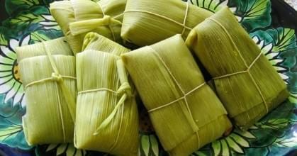

Humitas

Description
From Wikipedia: Humita (from Quechua humint'a) is a Native South American dish from pre-Hispanic times, a traditional food from the Andes and it can be found in Bolivia, Chile, Ecuador, Peru, and Northwest Argentina.
It consists of fresh corn (Peruvian maize) pounded to a paste, wrapped in a fresh corn husk, and slowly steamed or boiled in a pot of water.
Ingredients
- 12 whole corn
- 1 big onion
- 1 cup of milk
- Salt, as to your liking
- Basil
Steps
- First, perserve the leaves of the corn. Then, grind or grate the corn using a processor. The grains have to be very well grounded.
- Chop the onion and fry until transparent. Add the ground corn along with the milk and chopped basil.
- Let it cook. Add more milk if needed. It will be ready when you can make a stroke through the corn paste.
- Ready the corn leaves for the filling. You can cross the leaves in order to make filling them easier. Fill, fold the sides, then fold the ends, and tie it up.
- Put them in a pot of water and cook for 30 minutes.
- Take it out and let it sit. Serve and enjoy.